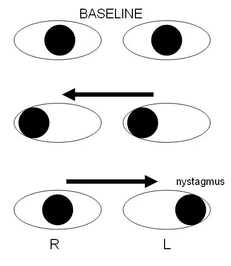

1. Définition
Le panel international des critères de McDonald, révisés en 2024 et publiés en 2025, définit la sclérose en plaques (SEP) comme une maladie démyélinisante inflammatoire du système nerveux central (SNC)S1S2. Le diagnostic exige des lésions typiques et l'absence d'une meilleure explication, puisque les critères reposent sur la reconnaissance d'un tableau clinique et radiologique typiqueS2. L'ophtalmoplégie internucléaire (OIN) est un trouble oculomoteur où l'adduction de l'œil du côté atteint ralentit pendant les saccades horizontalesS6. Elle traduit une lésion du faisceau longitudinal médian (FLM), situé du côté de l'œil qui adduit malS9.
2. Épidémiologie (Suisse, puis Europe)
Le registre suisse de la SEP estime que 18 140 personnes vivaient avec la maladie en Suisse en 2021S3. Cette prévalence a augmenté de 20 % depuis 2016, et la croissance de la population n'explique qu'un cinquième de cette hausseS3. L'incidence suisse atteint 7,7 nouveaux diagnostics pour 100 000 habitants par an, soit environ deux par jourS4. L'OIN touche 34 % des patients d'une cohorte néerlandaise examinée par oculographie infrarougeS5. La maladie réduit enfin l'emploi et alourdit les coûtsS11.
Chiffres suisses de la sclérose en plaques
Le registre combine ses propres données aux garanties de remboursement des traitements de fond, puis il applique une méthode de multiplicateur de référenceS3S4.
| Indicateur | Valeur | Année |
|---|---|---|
| Personnes atteintes | Le registre compte 18 140 personnes, avec un intervalle de simulation de 17 550 à 18 750S3 | 2021 |
| Prévalence de période | Elle vaut 200,8 à 214,5 pour 100 000 habitants, avec un pic entre 50 et 55 ansS3 | 2021 |
| Âge médian au diagnostic | Il reste à 36 ans, avec un intervalle interquartile de 28 à 45 ansS3 | 2016–2021 |
| Rapport femmes/hommes | Il reste stable à 2,7 pour 1S3 | 2016–2021 |
| Nouveaux cas par an | Le registre en estime 663, avec un intervalle de 617 à 711S4 | 2017–2021 |
| Forme au diagnostic | La forme récurrente-rémittente représente 94,0 % des nouveaux diagnosticsS4 | 2017–2021 |
L'incidence reste stable sur cinq ans et dépasse constamment celle des hommes chez les femmesS4. Le pic d'incidence se situe entre 30 et 35 ans chez la femme et entre 35 et 40 ans chez l'hommeS4. La plupart des diagnostics tombent entre 20 et 40 ans, mais les diagnostics à l'âge moyen deviennent plus fréquentsS4. La population malade vieillit : la part des plus de 65 ans est passée de 8,0 % à 11,1 % entre 2016 et 2021S3. La part des patients sous traitement de fond est passée de 62,1 % à 69,0 % sur la même périodeS3. Après le diagnostic, 56,9 % reçoivent un traitement oral, 27,7 % une perfusion et 15,4 % un traitement injectableS4.
Fréquence et causes de l'ophtalmoplégie internucléaire
La fréquence mesurée dépend de l'outil, car l'examen clinique manque facilement une OIN discrèteS5.
| Série | Résultat |
|---|---|
| Amsterdam, 210 SEP et 58 témoins | L'oculographie infrarouge trouve une OIN chez 71 patients, soit 34 % ; elle est bilatérale chez 26 d'entre eux, soit 37 %S5 |
| Zurich, 63 SEP | La vidéo-oculographie identifie une OIN chez 19 patients : 7 bilatérales, 7 droites et 5 gauchesS6 |
| Bochum, 243 SEP | L'oculographie en réalité virtuelle détecte seule 23 OIN, alors que la clinique en détecte seule 3S7 |
| Los Angeles, 410 OIN hospitalisées | L'infarctus cause 38 % des cas, la SEP 34 % et les causes inhabituelles 28 %S8 |
La littérature décrit une OIN chez 25 à 34 % des patients atteints de SEPS6. Dans la série californienne, l'OIN est unilatérale dans 87 % des infarctus, mais seulement dans 27 % des SEPS8. Une OIN bilatérale de l'adulte jeune oriente donc vers la SEP, alors qu'une OIN unilatérale brutale du sujet âgé oriente vers l'infarctusS8. Les causes inhabituelles comprennent le traumatisme, l'engagement tentoriel, l'infection, la tumeur, l'hémorragie et la vasculariteS8.
Histoire naturelle et poids social
La forme récurrente-rémittente évolue par poussées suivies de rémissions, tandis que la forme primaire progressive s'aggrave d'emblée sans pousséeS2S4. Les critères définissent cette progression par au moins 12 mois d'aggravation neurologique régulière, indépendante des pousséesS2.
La grossesse modifie le rythme des poussées : l'étude européenne PRIMS a suivi 254 femmes pendant 269 grossesses dans 12 paysS12. Le taux annuel de poussées valait 0,7 avant la grossesse et tombait à 0,2 au troisième trimestreS12. Il remontait pendant les trois premiers mois du post-partum, puis il revenait au taux antérieurS12.
L'enquête suisse de 2015 a interrogé 721 patients, dont l'âge moyen était de 48 ansS11. Parmi les patients en âge de travailler, 65 % occupaient un emploi, et la maladie réduisait la productivité de 69 % d'entre euxS11. La fatigue gênait 93 % des patients et les troubles cognitifs 64 %S11. Le coût annuel moyen passait de 29 600 francs pour un handicap léger à 110 800 francs pour un handicap sévèreS11. Une poussée coûtait en moyenne 7600 francsS11.
3. Physiopathologie
La SEP associe une inflammation et une démyélinisation du SNC, dont la cause exacte reste inconnueS13. Le virus d'Epstein-Barr (EBV) précède la maladie : dans une cohorte militaire, l'infection multiplie le risque de SEP par 32S13. La voie de la saccade horizontale explique le signe : une plaque du FLM ralentit la commande d'adduction, donc l'œil homolatéral traîneS5S9. La chaîne lésionnelle relie ensuite chaque étape à l'examen qui la montre et au traitement qui la corrige. La chaleur aggrave enfin transitoirement la conduction des fibres démyélinisées, ce qui définit le phénomène d'UhthoffS14.
Base à connaître : la saccade horizontale
Une saccade fait sauter rapidement le regard d'un point de fixation à un autreS9. La formation réticulée pontique paramédiane commande les saccades horizontales, car sa lésion ralentit les saccades du même côtéS9. Le noyau abducens d'un côté est relié au noyau oculomoteur de l'autre côté par le FLMS5. Lorsque le regard part vers la gauche, l'œil gauche abduit et l'œil droit doit adduire en même temps. Une plaque du FLM droit retarde alors l'œil droit, puisque la commande d'adduction lui parvient ralentieS5S9. L'œil gauche, lui, dépasse la cible et bat : ce nystagmus dissocié prédomine sur l'œil en abductionS9.
Ophtalmoplégie internucléaire droite. Ce schéma montre les deux yeux vus de face, en position primaire, puis en regard à droite, puis en regard à gauche

Lisez d'abord seul ce cliché (ophtalmoplégie internucléaire droite) : cherchez vous-même le signe.
La copie annotée (ophtalmoplégie internucléaire droite) porte les numéros des repères décrits ci-dessous.
- 1. Dans le regard vers la droite, les deux yeux atteignent ensemble le côté droit du patient, donc le faisceau gauche fonctionneS9.
- 2. Dans le regard vers la gauche, l'œil droit reste au milieu, car il adduit mal : ce retard désigne le côté de la lésionS9.
- 3. L'œil gauche abduit complètement et il bat : ce nystagmus touche l'œil en abductionS9.
- Le schéma place l'œil droit du patient à gauche de l'image, comme lorsque le médecin fait face au patient.
- Un schéma fige une position, alors que le signe réel est un retard de vitesse, visible seulement pendant la saccade.
Ce que l'image décide. Ce tableau désigne le faisceau longitudinal médian droit et conduit à demander une IRM cérébrale et médullaire.

Le débutant confond souvent le côté : l'OIN porte le nom de l'œil qui adduit mal, et la lésion siège de ce même côtéS9. Les saccades vers la gauche révèlent donc une OIN droite, et inversementS6.
De la molécule au signe clinique
Amorce. Parmi plus de 10 millions de jeunes militaires, 955 ont reçu un diagnostic de SEP pendant leur serviceS13. Le risque n'augmentait pas après d'autres infections virales, y compris le cytomégalovirus, qui se transmet pourtant de façon semblableS13. Les neurofilaments à chaîne légère du sérum, marqueurs de dégénérescence neuro-axonale, ne montaient qu'après la séroconversion pour l'EBVS13.
Développement. Les leucocytes mononucléés franchissent l'endothélium grâce à l'intégrine α4β1, qui se lie à la molécule d'adhésion VCAM-1S21. Les lymphocytes B porteurs de l'antigène CD20 participent à la maladie, puisque leur déplétion constitue un traitement validéS22S10. Les lymphocytes quittent les ganglions sous le contrôle des récepteurs de la sphingosine-1-phosphate (S1P)S24.
Installation. L'inflammation détruit la myéline et forme une plaque, visible comme une lésion en hypersignal T2S2. Une plaque récente fixe le gadolinium ; la coexistence de lésions rehaussées et non rehaussées établit alors la dissémination dans le tempsS2. Lorsque la plaque siège sur le FLM, la conduction ralentit et l'OIN apparaîtS5.
Maintien. Les lésions chroniques à bord paramagnétique gardent un liseré de microglie activée chargée de fer, très spécifique de la SEPS2. Les plasmocytes sécrètent des immunoglobulines dans le liquide cérébrospinal (LCS), ce que montrent les bandes oligoclonales et les chaînes légères libres kappaS2.
| Perturbation | Exploration qui la montre | Thérapeutique qui la corrige |
|---|---|---|
| Plaque active du FLM | L'imagerie par résonance magnétique (IRM) montre un hypersignal du tronc, et l'oculographie mesure le retard d'adductionS6 | La méthylprednisolone à forte dose peut réduire la durée de la pousséeS20 |
| Passage des leucocytes vers le SNC | L'IRM montre de nouvelles lésions rehaussées par le gadoliniumS2 | Le natalizumab bloque l'intégrine α4 et empêche la migration des leucocytes mononucléés à travers l'endothéliumS21 |
| Lymphocytes B activés | Le LCS contient des bandes oligoclonales ou des chaînes légères libres kappaS2 | L'ocrélizumab cible de manière sélective les cellules B qui expriment le CD20S22 |
| Sortie des lymphocytes des ganglions | L'activité persiste à la clinique ou à l'IRMS2 | Le fingolimod module le récepteur de la sphingosine-1-phosphateS24 |
| Inflammation et stress oxydatif | L'IRM de suivi révèle de nouvelles lésions T2S2 | Le diméthylfumarate active vraisemblablement la voie de défense cellulaire Nrf2S23 |
| Bloc de conduction lié à la chaleur | L'aggravation transitoire survient quand la température corporelle monteS14 | Le repos au frais suffit, car aucune inflammation nouvelle n'est à traiterS14 |
Phénomène d'Uhthoff
Le phénomène d'Uhthoff correspond à une aggravation temporaire des symptômes neurologiques, due à une hausse de la température corporelleS14. Il s'observe dans les maladies démyélinisantes, surtout dans la SEPS14. Son mécanisme reste discuté : un bloc de conduction dépendant de la température dans les axones démyélinisés est l'hypothèse principaleS14. Une équipe berlinoise rapporte une femme de 37 ans dont la vue de l'œil droit baissait transitoirement en dansant, depuis quatre ansS14. Cette aggravation n'est pas une poussée, puisque la définition de la poussée exclut la fièvre et l'infectionS2. Une diplopie qui revient au bain chaud ne justifie donc aucun corticoïde.
4. Démarche diagnostique
Devant une diplopie horizontale avec adduction lente, le médecin écarte d'abord les diagnostics qui portent un drapeau d'exclusion dans la Phase A. Il retient ensuite la SEP si le déficit se limite à l'adduction, sans ptosis ni mydriase, chez un adulte jeuneS9S8. Le raisonnement tient en quatre diagnostics discriminants, puis en une erreur classique à éviter. Le diagnostic différentiel de l'OIN reste tripartite : SEP, accident vasculaire cérébral (AVC) et autres causesS8.
Diagnostics discriminants, graves d'abord
| Diagnostic | Élément qui tranche | Piège | Conduite si positif |
|---|---|---|---|
| 🚩 Paralysie du III par anévrisme (DX.10) | Un ptosis, une mydriase ou une limitation verticale accompagnent le défaut d'adduction, alors que l'OIN les épargneS9 | Un III partiel passe pour une OIN lorsque seule l'adduction frappe le regard | L'imagerie vasculaire s'impose sans délai, selon la conduite de DX.10 |
| 🚩 AVC du tronc cérébral (DX.3) | Le début est brutal et l'OIN reste unilatérale dans 87 % des infarctusS8 | L'OIN brutale d'un sujet âgé est attribuée à tort à une SEP | Le patient entre dans la filière AVC décrite dans DX.3 |
| 🚩 Myasthénie (DX.4) | La faiblesse fluctue et se fatigue ; la myasthénie atteint souvent les deux yeuxS9 | Le médecin conclut à une OIN sans avoir testé la fatigabilité | Le bilan de myasthénie suit la conduite de DX.4 |
| Leucoencéphalopathie multifocale progressive (LEMP) | Un signe neurologique nouveau survient sous traitement de fond, et l'AIPS impose de la rechercherS21S22 | La LEMP imite une poussée de SEP | Le traitement est suspendu et le neurologue demande une IRM |
| SEP (DX.6) | L'OIN est souvent bilatérale chez l'adulte jeune, et l'IRM montre des lésions typiquesS8S2 | Le médecin exige une seconde poussée, alors que la DIT n'est plus toujours requiseS2 | Le patient reçoit une IRM cérébrale et médullaire, puis un avis neurologique |
Les maladies à anticorps dirigés contre l'aquaporine 4 (AQP4) ou contre la glycoprotéine oligodendrocytaire de la myéline (MOG) forment un autre groupe de démyélinisationsS2. Leur diagnostic repose sur des tests cellulaires, dont les versions sur cellules vivantes sont les plus sensiblesS2. La migraine, le trouble neurologique fonctionnel et la maladie cérébrovasculaire sont enfin les affections le plus souvent prises pour une SEPS2.
Erreur classique du débutant
Le débutant voit un œil qui n'adduit pas et conclut à une paralysie du droit médial par atteinte du III. Il oublie que le III commande aussi la paupière, la pupille et les mouvements verticauxS9. Le raisonnement correct procède en quatre temps. D'abord, le mécanisme : la plaque touche le faisceau qui relie deux noyaux, et non le nerfS5. Ensuite, le signe : l'adduction ralentit en saccade, tandis que l'autre œil bat en abductionS9. Puis, l'examen : l'IRM cherche la plaque, mais elle ne la voit que dans 46,2 % des cas mesurés par oculographieS6. Enfin, la décision : une IRM normale n'écarte pas l'OIN, donc le neurologue poursuit le bilanS6.
Un exemple chiffré fixe la règle. Une jeune femme voit double en regardant à gauche ; son œil droit adduit lentement et son œil gauche bat. Ses pupilles et ses paupières sont normales : l'OIN est droite, et la plaque siège dans le FLM droitS9S6.
5. Anamnèse ciblée et drapeaux rouges
Le médecin caractérise d'abord la diplopie, puis il date son installation, car une poussée s'installe en heures ou en joursS2. Il recherche ensuite des épisodes anciens, la sensibilité à la chaleur et les traitements en cours. Chaque drapeau rouge impose enfin une action immédiate.
Diplopie : caractérisation
- Type. Les deux images se placent côte à côte, car le désalignement est horizontal ; la diplopie disparaît quand un œil est couvert.
- Déclencheur. La gêne apparaît surtout dans le regard latéral rapide, lorsque l'œil en adduction arrive en retard sur l'autreS5.
- Horaire. Le trouble reste stable dans la journée ; une variation nette avec la fatigue évoque plutôt la myasthénie de DX.4.
- Installation. Elle se fait de façon aiguë ou subaiguë et dure au moins 24 heures, ce qui correspond à la définition de la pousséeS2.
- Signes associés. Une vision instable ou floue en regard latéral traduit le nystagmus de l'œil en abductionS9.
- Caractère typique. La diplopie n'est pas constante : seuls 35,2 % des patients avec OIN s'en plaignent, contre 18,4 % des patients sans OINS5.
Son absence n'écarte donc pas l'OIN, et l'examen des saccades reste nécessaire chez tout patient suspect de SEPS5.
Épisodes neurologiques anciens
- Baisse visuelle d'un œil. Une baisse de plusieurs jours évoque une atteinte du nerf optique, cinquième localisation des critèresS1.
- Fourmillements ou faiblesse d'un membre. Un épisode de plus de 24 heures oriente vers une lésion médullaire ou cérébrale ancienneS2.
- Trouble de l'équilibre. Il évoque une lésion sous-tentorielle, qui touche le tronc cérébral ou le cerveletS2.
- Caractère typique. Ces épisodes sont typiques s'ils ont duré au moins 24 heures et laissé un signe objectifS2.
- Caractère atypique. Des symptômes non spécifiques ou paroxystiques ne constituent pas une poussée franche, même si les critères leur ouvrent une voie particulièreS1.
Une seconde poussée dans un autre territoire établit à la fois la dissémination dans l'espace et dans le tempsS2.
Chaleur, effort et fièvre
- Question. Le médecin demande si le trouble revient au bain chaud, à l'effort ou pendant une fièvre.
- Raison. La hausse de la température corporelle aggrave temporairement les symptômes des maladies démyélinisantesS14.
- Caractère typique. Le trouble reproduit un déficit ancien et cède au repos, comme la baisse visuelle déclenchée par la danse dans le cas berlinoisS14.
- Conséquence. Cette pseudo-poussée ne reçoit aucun corticoïde, puisque la poussée se définit sans fièvre ni infectionS2.
Terrain, traitements et projets
- Âge et facteurs vasculaires. Après 50 ans, ou en cas de migraine ou de facteurs vasculaires, les anomalies de la substance blanche deviennent peu spécifiquesS2.
- Traitement de fond en cours. Le natalizumab et l'ocrélizumab exposent à la LEMP, qui se présente comme une pousséeS21S22.
- Grossesse et post-partum. Les poussées diminuent en fin de grossesse et augmentent pendant les trois mois qui suivent l'accouchementS12.
- Vaccins. Le statut vaccinal se documente dès le diagnostic, car les vaccins vivants deviennent contre-indiqués sous immunosuppresseurS16.
- Conduite automobile et métier. Toute suspicion de diplopie impose un examen ophtalmologique avant de statuer sur l'aptitude à conduireS17.
Drapeaux rouges et action immédiate
| Drapeau rouge | Signification | Action immédiate |
|---|---|---|
| Ptosis, mydriase ou limitation verticale | Ces signes désignent le nerf III et non le FLMS9 | Le médecin demande l'imagerie vasculaire urgente de DX.10 |
| Début en quelques minutes chez un sujet vasculaire | L'infarctus cause 38 % des OIN hospitaliséesS8 | Le patient entre dans la filière AVC de DX.3 |
| Faiblesse fluctuante, trouble de la déglutition ou de la respiration | Ce tableau évoque une myasthénie généralisée | Le patient est surveillé selon la conduite de DX.4 |
| Signe nouveau sous natalizumab ou ocrélizumab | Une LEMP est possibleS21S22 | Le traitement est suspendu jusqu'à l'IRM et l'avis du neurologue |
| Fièvre, céphalée ou traumatisme récent | L'infection et le traumatisme comptent parmi les causes inhabituelles d'OINS8 | Le bilan étiologique précède tout corticoïde |
| Baisse visuelle associée | Une atteinte du nerf optique s'ajoute à celle du troncS1 | L'IRM comprend alors les orbites |
6. Examen physique ciblé, région par région
L'examen suit l'ordre où le médecin le réalise au lit du patient, car chaque temps prépare le suivantS9. Il commence par les paupières, les pupilles et la position des yeux, puis il teste les saccades horizontales, où le signe se voit le mieux. Il examine ensuite la poursuite et le regard tenu, la vergence et l'alignement vertical. Il termine par le nerf optique et le reste du névraxe, qui apportent la preuve d'une seconde localisationS2.
Paupières, pupilles et position primaire
- Signe recherché. Le médecin cherche un ptosis, une anisocorie ou une déviation d'un œil en regard droit devant.
- Geste. Il observe le patient de face pendant l'entretien, puis il éclaire chaque pupille l'une après l'autre.
- Aspect normal. Les fentes palpébrales sont égales, les pupilles réagissent et les yeux restent alignés.
- Aspect dans l'OIN. Les paupières et les pupilles restent normales, car la lésion épargne le nerf oculomoteurS9.
- Piège. Un ptosis ou une mydriase interdisent de conclure à une OIN ; ils orientent vers le nerf III ou vers la myasthénieS9.
Saccades horizontales
- Signe recherché. Le médecin cherche un œil qui adduit plus lentement que l'autre n'abduitS6.
- Geste. Le patient regarde alternativement deux cibles horizontales, par exemple les deux index du médecin écartésS9.
- Observation. Le médecin surveille la vitesse, la précision et la conjugaison des deux yeux à chaque sautS9.
- Aspect normal. Les deux yeux partent et arrivent ensemble sur la cible.
- Aspect pathologique. L'œil en adduction traîne et rejoint la cible en retard, tandis que l'œil en abduction batS9.
- Valeur. Ce ralentissement de l'adduction en saccade est le signe pathognomonique de l'OINS9.
- Piège. Un déficit discret échappe à l'œil nu : l'oculographie détecte des OIN que la clinique ne voit pasS7.
Le schéma de la fenêtre « Base à connaître » du point 3 montre l'aspect attendu pour une OIN droite.
Poursuite et regard latéral tenu
- Signe recherché. Le médecin cherche un nystagmus horizontal dissocié, plus ample sur l'œil en abduction que sur l'œil en adductionS9.
- Geste. Le patient suit une cible lente, puis il maintient le regard de côté pendant quelques secondesS9.
- Aspect normal. La poursuite reste lisse et le regard tenu ne montre aucune secousse durable.
- Aspect pathologique. L'œil en abduction bat vers l'extérieur, alors que l'œil en adduction reste en retraitS9.
- Piège. Un nystagmus du regard présent dans toutes les directions traduit plutôt une atteinte du cervelet ou un médicamentS9.
Vergence
- Signe recherché. Le médecin vérifie que les deux yeux convergent lorsque la cible se rapproche.
- Geste. Il approche une cible depuis environ 50 cm vers les yeux du patientS9.
- Aspect normal. Le regard de près provoque la convergence, l'accommodation et un myosisS9.
- Intérêt. La vergence ne compte pas parmi les mouvements parallèles : elle déplace les yeux l'un par rapport à l'autreS9.
- Piège. Un spasme du réflexe de près peut imiter une paralysie bilatérale de l'abduction ; le myosis associé le trahitS9.
Test de l'écran et alignement vertical
- Signe recherché. Le médecin cherche une divergence verticale, où un œil se place plus haut que l'autreS9.
- Geste. Il couvre un œil, puis l'autre, pendant que le patient fixe une cible, et il observe le mouvement de l'œil découvertS9.
- Aspect normal. L'œil découvert reste immobile.
- Aspect pathologique. Une divergence verticale aiguë, dite skew deviation, indique une lésion centrale des voies graviceptivesS9.
- Valeur. Ce signe confirme le siège central du trouble, puisqu'aucune paralysie d'un muscle ou d'un nerf ne l'expliqueS9.
Nerf optique
- Signe recherché. Le médecin cherche une baisse de l'acuité d'un seul œil, ancienne ou actuelle.
- Geste. Il mesure l'acuité de chaque œil séparément, l'autre œil étant couvert.
- Valeur. L'examen neurologique suffit à démontrer une lésion du nerf optique, au même titre que l'IRM ou les examens électrophysiologiquesS2.
- Piège. Une atteinte infraclinique échappe à l'acuité ; les potentiels évoqués ou la tomographie la révèlent alorsS2.
Reste du névraxe
- Signe recherché. Le médecin cherche un déficit moteur, sensitif ou cérébelleux qui désigne une autre région du SNC.
- Geste. Il teste la force, les réflexes, la sensibilité et la coordination des quatre membres, puis la marche.
- Valeur. Une poussée clinique dans une localisation différente de la première compte comme dissémination dans l'espaceS2.
- Lien avec l'OIN. L'OIN détectée par oculographie s'associe à un handicap plus élevé et à un score du tronc cérébral plus élevéS7.
7. Approche syndromique
Quatre syndromes résument l'atteinte visuelle et oculomotrice de la SEP : l'OIN unilatérale, l'OIN bilatérale, l'atteinte du nerf optique et la pseudo-poussée thermique. Le tableau ci-dessous sépare leurs signes fonctionnels et physiques, puis chaque fenêtre précise le geste et le mécanisme. Une lésion étendue au noyau du VI ou à la formation réticulée pontique paramédiane du même côté provoque le syndrome « un et demi », que la leçon DX.3 détaille.
| Syndrome | Signes fonctionnels | Signes physiques |
|---|---|---|
| 7.1 OIN unilatérale | Le patient voit double dans un seul regard latéral | Un œil adduit lentement et l'autre bat en abductionS9 |
| 7.2 OIN bilatérale | La gêne survient dans les deux regards latéraux | Chaque œil adduit lentement à son tourS5 |
| 7.3 Atteinte du nerf optique | La vue d'un œil baisse pendant plusieurs jours | L'acuité d'un œil diminue et les examens électrophysiologiques s'altèrentS2 |
| 7.4 Pseudo-poussée thermique | Un trouble ancien revient à la chaleur ou à l'effort | L'examen redevient identique à l'état antérieur après le reposS14 |
7.1 OIN unilatérale
Adduction lente. Ce signe désigne le retard de l'œil qui se porte vers le nez pendant une saccade horizontaleS6. Le médecin le recherche par des saccades entre deux cibles, et il l'explique par la lésion du FLM homolatéralS9.
Nystagmus dissocié. Ce nystagmus horizontal bat davantage sur l'œil en abduction que sur l'œil en adductionS9. Il accompagne souvent l'OIN, sans être constantS6.
Latéralité. Dans la série zurichoise, 12 des 19 OIN étaient unilatérales, 7 à droite et 5 à gaucheS6. Une OIN unilatérale isolée impose toutefois d'écarter l'infarctus, qui donne cette forme dans 87 % des casS8.
7.2 OIN bilatérale
Adduction lente des deux yeux. Chaque œil traîne lorsqu'il adduit, ce qui suppose une atteinte des deux faisceauxS5. Le médecin recherche donc le signe par des saccades vers la droite, puis vers la gauche.
Valeur d'orientation. Dans la série californienne, 27 % seulement des OIN de SEP étaient unilatérales, alors que 87 % des OIN ischémiques l'étaientS8. Une forme bilatérale chez un adulte jeune oriente donc d'abord vers la SEPS8. À Amsterdam, 37 % des OIN mesurées étaient bilatéralesS5.
Terrain. Les patients porteurs d'une OIN avaient une maladie plus ancienne que les autresS5. Leur qualité de vie liée à la vision était aussi plus basseS5.
7.3 Atteinte du nerf optique
Baisse visuelle unilatérale. Ce signe fonctionnel traduit une plaque du nerf optique lorsqu'il dure au moins 24 heures, sans fièvreS2. Le médecin le recherche par l'acuité de chaque œil.
Preuve paraclinique. Trois outils objectivent la lésion : l'IRM des orbites, les potentiels évoqués visuels et la tomographie par cohérence optiqueS2. Les seuils figurent au point 9, dans la fenêtre de ces examens.
Intérêt. Le nerf optique compte désormais comme cinquième région, donc une OIN associée à une atteinte optique touche déjà deux régionsS1S2.
7.4 Pseudo-poussée thermique
Réapparition transitoire. Un déficit connu, visuel ou oculomoteur, revient quand la température du corps monte, puis il cèdeS14. Le médecin interroge sur les circonstances et mesure la température.
Mécanisme. Les axones démyélinisés conduisent moins bien à la chaleur, sans nouvelle lésion inflammatoireS14. Ce phénomène peut même constituer la première manifestation de la maladie, comme dans le cas berlinoisS14.
Décision. Le médecin cherche une infection et la traite ; il ne prescrit pas de corticoïde, puisque les critères excluent la fièvre de la pousséeS2.
8. Diagnostic positif et critères
Les critères de McDonald 2024 posent le diagnostic et remplacent ceux de 2017S1. Des lésions typiques dans au moins quatre des cinq régions suffisent, sans preuve de dissémination dans le tempsS2. Avec moins de régions, il faut une preuve complémentaire, dont les seuils sont fixésS2. Une OIN isolée, des hypersignaux non spécifiques ou des bandes oligoclonales seules ne suffisent pasS2S8.
Termes officiels des critères de McDonald 2024
La révision de 2024 réunit en une seule démarche le diagnostic des formes à poussées et des formes progressives, de l'enfant au sujet âgéS1. Elle admet le nerf optique comme cinquième localisation anatomique du SNCS1. Le glossaire de la revue d'application publiée en 2026 fixe ensuite le sens de chaque termeS2.
| Terme | Définition du glossaire |
|---|---|
| Poussée | Des symptômes rapportés et des signes objectifs reflètent un événement démyélinisant typique. Ils s'installent de façon aiguë ou subaiguë et durent au moins 24 heures, sans fièvre ni infectionS2 |
| Syndrome cliniquement isolé | Ce terme désigne le premier événement démyélinisant évocateur de SEP, qui répond à la définition de la pousséeS2 |
| Dissémination dans l'espace (DIS) | Les lésions touchent plusieurs des cinq régions : périventriculaire, corticale ou juxtacorticale, sous-tentorielle, médullaire et nerf optiqueS2 |
| Dissémination dans le temps (DIT) | De nouvelles lésions T2 apparaissent au fil du temps, ou des lésions rehaussées et non rehaussées coexistent sur une même imagerieS2 |
| Lésion sous-tentorielle | Cette lésion T2 siège dans le tronc cérébral, les pédoncules cérébelleux ou le cervelet ; une plaque du FLM en fait donc partieS2 |
Critères de McDonald 2024 : ce qui suffit
| Situation | Ce qui suffit au diagnostic |
|---|---|
| Lésions dans 4 ou 5 régions | La dissémination dans l'espace suffit, car elle prédit la dissémination dans le tempsS2 |
| Lésions dans 2 ou 3 régions | Il faut une dissémination dans le temps, un LCS positif ou un signe de la veine centrale positifS2 |
| Lésions dans une seule région | Il faut une dissémination dans le temps ou un LCS positif, avec un signe de la veine centrale ou une lésion à bord paramagnétiqueS2 |
| Forme progressive d'emblée | Après 12 mois d'aggravation régulière, deux lésions médullaires ou plus remplacent la dissémination dans l'espaceS2 |
| Plus de 50 ans, migraine ou facteurs vasculaires | Le clinicien cherche une lésion médullaire, un LCS positif ou un signe de la veine centrale positifS2 |
| Enfant | Les critères ne s'appliquent pas à l'encéphalomyélite aiguë disséminée, et les anticorps anti-MOG se dosent avant 12 ansS2 |
| Biomarqueur | Seuil de positivité |
|---|---|
| Bandes oligoclonales | Le LCS contient au moins 2 bandes absentes du sérum, ce qui prouve une synthèse intrathécaleS2 |
| Index des chaînes légères libres kappa | Un index d'au moins 6,1 est positif et remplace les bandes oligoclonalesS2 |
| Signe de la veine centrale | Au moins 6 lésions de la substance blanche montrent une veine centrale ; en dessous de 10 lésions, une majorité suffitS2 |
| Lésion à bord paramagnétique | Une seule lésion suffit, identifiée sur une séquence sensible à la susceptibilité magnétiqueS2 |
| Nerf optique | La tomographie montre une différence entre les yeux d'au moins 6 µm pour les fibres péripapillaires, ou d'au moins 4 µm pour la couche ganglionnaireS2 |
La concordance entre bandes oligoclonales et chaînes légères kappa atteint environ 90 %, donc les deux dosages se complètent dans les cas douteuxS2. Après 50 ans, les critères recommandent aussi au moins 3 lésions périventriculaires pour retenir cette régionS2.
Un exemple applique la règle : une jeune femme présente une OIN droite, et l'IRM montre des lésions périventriculaires, juxtacorticales, sous-tentorielles et médullaires. Quatre régions sont atteintes, donc le diagnostic est posé sans attendre une seconde pousséeS2.
Ce qui ne suffit pas
- Une OIN seule ne prouve pas la SEP, car l'infarctus explique 38 % des cas hospitalisés et les causes inhabituelles 28 %S8.
- Des anomalies multifocales de la substance blanche accompagnent l'hypertension, le diabète, la dyslipidémie et le tabagisme, et elles favorisent l'erreur de diagnosticS2.
- Une aggravation fébrile n'est pas une poussée, puisque la définition exige l'absence de fièvre et d'infectionS2.
- Un tableau ou une IRM atypiques imposent une recherche complémentaire, même si aucun autre diagnostic ne s'impose encoreS2.
- Un syndrome radiologiquement isolé ne remplit les critères que dans certains cas, soutenus par des biomarqueursS1.
Le handicap se cote ensuite par l'échelle étendue de Kurtzke, dite EDSS (Expanded Disability Status Scale), qui va de 0 à 10S12. Les coûts suisses se répartissent selon trois classes de ce score : 0 à 3, 4 à 6,5 et 7 à 9S11.
9. Examens complémentaires
9.a Référence. Aucun examen unique ne prouve la SEP : le diagnostic combine la clinique, l'IRM et, au besoin, le LCS ou les examens du nerf optiqueS2. Pour l'OIN elle-même, aucun étalon clinique n'existe, et l'oculographie sert de mesure de référenceS5.
9.b Première intention. Le médecin demande une IRM cérébrale et médullaire, car elle seule montre les lésions et leur répartitionS2S18.
9.c Alternatives. La grossesse, le post-partum, l'enfance et l'impossibilité d'injecter le gadolinium modifient le protocole, selon les situations particulièresS18.
9.d Deuxième intention. La ponction lombaire, les potentiels évoqués visuels et la tomographie ainsi que les anticorps complètent un dossier incompletS2. Le bilan avant traitement de fond suit enfin les exigences de chaque AIPS.
IRM cérébrale et médullaire
Indication. Toute OIN de l'adulte jeune justifie une IRM, puisque le diagnostic repose sur des lésions typiquesS2.
Prescription. La demande précise : « IRM cérébrale et médullaire, sans puis avec gadolinium, recherche de lésions démyélinisantes, OIN droite récente ». Le consensus international de 2021 fait de la séquence FLAIR tridimensionnelle la séquence cérébrale centraleS18. Il recommande un emploi mesuré du gadolinium, réservé à des objectifs cliniques précisS18. Les séquences sensibles à la susceptibilité magnétique montrent la veine centrale et le bord paramagnétiqueS2.
| Résultat | Signification | Conduite |
|---|---|---|
| Lésions typiques dans 4 ou 5 régions | Le diagnostic de SEP est acquisS2 | Le neurologue prépare le traitement de fond |
| Lésions dans 2 ou 3 régions, rehaussées et non rehaussées | Les deux disséminations sont prouvéesS2 | La conduite reste la même |
| Lésions dans 2 ou 3 régions, aucune rehaussée | La dissémination dans le temps manqueS2 | Une ponction lombaire ou le signe de la veine centrale la remplaceS2 |
| Veine centrale visible | Une ligne hypo-intense de moins de 2 mm traverse le centre de la lésionS2 | Le radiologue compte les lésions qui la portent |
| IRM normale malgré une OIN clinique | L'IRM manque plus de la moitié des OIN mesuréesS6 | Le neurologue demande une oculographie et un LCS |
Performance pour l'OIN. À Zurich, trois lecteurs ont comparé l'IRM à 3 teslas à la vidéo-oculographie chez 63 patientsS6. La spécificité de l'IRM atteignait 92,0 % par œil, mais sa sensibilité ne dépassait pas 46,2 %S6. Par patient, la spécificité valait 86,4 % et la sensibilité 63,2 %S6. Le rapport de vraisemblance positif valait 5,77 et le rapport négatif 0,59S6. L'IRM plaçait en outre un tiers des lésions du FLM du mauvais côtéS6.
Piège. Une lésion du FLM n'était retenue que si elle apparaissait sur 2 des 3 séquences étudiéesS6. L'IRM constitue donc un marqueur morphologique spécifique, alors que l'oculographie mesure la fonctionS6.
Oculographie
Principe. L'appareil mesure la vitesse des deux yeux pendant des saccades horizontales, de façon non invasive et quantitativeS5. L'index de dysconjugaison correspond au rapport entre la vitesse de pointe de l'œil en abduction et celle de l'œil en adductionS6.
Valeurs. À Zurich, cet index valait en moyenne 0,96 chez les témoins, pour des saccades de 20 degrésS6. Le seuil pathologique, fixé à 1,12, correspond à la limite supérieure de 95 % des témoinsS6. Un patient porteur d'une OIN droite atteignait 2,56 pour les saccades vers la gaucheS6.
Interprétation. Un index supérieur au seuil signe l'OIN, car il augmente quand l'adduction ralentitS6. À Amsterdam, la meilleure exactitude revenait à l'aire sous la courbe de saccades de 15 degrésS5.
Comparaison avec la clinique. À Bochum, l'accord entre l'appareil et l'examen clinique restait modéré dans la SEP, avec un kappa de 0,45S7. L'OIN ainsi mesurée s'associait au sexe masculin et à un handicap plus élevéS7.
Piège. Cet examen reste un outil de centre spécialisé ; son absence ne doit pas retarder l'IRM.
Ponction lombaire
Indication. Le LCS sert quand les lésions touchent moins de quatre régions sans dissémination dans le temps, ou quand le patient a plus de 50 ansS2.
Prescription. La demande associe le LCS et un sérum prélevé le même jour, car les deux marqueurs comparent ces deux milieuxS2.
| Résultat | Signification | Conduite |
|---|---|---|
| Au moins 2 bandes propres au LCS | Le LCS est positifS2 | Ce résultat remplace la dissémination dans le tempsS2 |
| Index kappa d'au moins 6,1 | Le LCS est positifS2 | Ce résultat a la même valeur que les bandesS2 |
| Index kappa négatif ou limite | Le doute persiste si la suspicion reste forte | Le laboratoire recherche les bandes sur l'échantillon conservéS2 |
Piège. Les chaînes légères libres kappa se dosent par néphélométrie ou turbidimétrie, ce qui rend le test plus accessible que les bandesS2. Les bandes oligoclonales restaient indisponibles dans 13 % de 122 pays interrogésS2.
Potentiels évoqués visuels et tomographie par cohérence optique
Indication. Ces examens prouvent une atteinte du nerf optique, y compris lorsque l'acuité est normaleS2.
Interprétation. Les potentiels évoqués visuels sont anormaux lorsque la latence de l'onde P100 s'allongeS2. La tomographie est anormale lorsque l'épaisseur diffère entre les deux yeux d'au moins 6 µm ou 4 µm, selon la coucheS2. Le premier seuil concerne les fibres péripapillaires, le second la couche des cellules ganglionnairesS2.
Conduite. Un résultat anormal ajoute une région à la dissémination dans l'espace, ce qui peut suffire à poser le diagnosticS1S2.
Piège. L'IRM des orbites, qui montre un hypersignal T2 du nerf, constitue la troisième façon d'objectiver cette lésionS2.
Anticorps anti-AQP4 et anti-MOG
Indication. Le dosage s'impose devant un tableau atypique pour une SEP, et les critères le recommandent fortement chez l'enfant de moins de 12 ansS2.
Interprétation. Un résultat positif oriente vers une démyélinisation à anticorps, distincte de la SEPS2.
Piège. Les tests sur cellules fixées sont moins sensibles que les tests sur cellules vivantes, donc un résultat négatif se discute avec le laboratoireS2.
Situations particulières
| Situation | Adaptation |
|---|---|
| Grossesse et post-partum | Le consensus international de 2021 étend ses recommandations d'IRM à ces périodes et limite le gadoliniumS18 |
| Gadolinium impossible, par exemple en cas d'insuffisance rénale sévère | Le LCS ou le signe de la veine centrale remplacent la preuve de dissémination dans le tempsS2 |
| IRM impossible | Le LCS, les potentiels évoqués et la tomographie apportent des preuves paracliniques, que le neurologue interprète en centre spécialiséS2 |
| Enfant | Les critères restent ceux de l'adulte, et le signe de la veine centrale exige alors 50 % de lésions positivesS2 |
| Sujet de plus de 50 ans | Le clinicien exige une preuve spécifique, absente du vieillissement normal et de la maladie vasculaireS2 |
Bilan avant traitement de fond
| Examen | Traitement concerné | Interprétation et conduite |
|---|---|---|
| Anticorps anti-virus JC par le test STRATIFY JCV | Natalizumab | Leur présence augmente le risque de LEMP ; l'AIPS recommande de répéter le test au moins tous les 6 moisS21 |
| Dépistage du virus de l'hépatite B | Ocrélizumab | Une infection active interdit le traitement, car des réactivations ont été observéesS22 |
| Électrocardiogramme (ECG) | Fingolimod | L'ECG se fait avant la première dose et à la fin des six heures de surveillanceS24 |
| Fond d'œil avec macula | Fingolimod | Un œdème maculaire contre-indique le traitement ; l'examen se répète 3 à 4 mois après le débutS24 |
| Test de grossesse | Fingolimod | Un résultat négatif doit être disponible avant le début du traitementS24 |
| Numération des leucocytes et des lymphocytes | Diméthylfumarate | Une lymphopénie inférieure à 0,5 × 10⁹/L ou une leucopénie inférieure à 3,0 × 10⁹/L contre-indiquent le traitementS23 |
| Statut vaccinal | Tous les immunosuppresseurs | Il se documente au diagnostic, au plus tard avant le traitementS16 |
10. Arbre décisionnel
- Si un ptosis, une mydriase ou une limitation verticale accompagnent le défaut d'adduction → le nerf III est en cause → imagerie vasculaire urgente (DX.10)S9.
- Si le début est brutal chez un sujet âgé ou vasculaire → infarctus du tronc probable → filière AVC (DX.3)S8.
- Si la faiblesse fluctue ou se fatigue → myasthénie possible → bilan de DX.4.
- Si le patient reçoit du natalizumab ou de l'ocrélizumab → LEMP possible → suspension du traitement et IRMS21S22.
- Si le trouble suit une fièvre ou un effort et cède au repos → pseudo-poussée → recherche d'une infection, sans corticoïdeS14S2.
- Si l'adduction lente est isolée, avec nystagmus de l'œil en abduction → OIN → IRM cérébrale et médullaire, puis avis neurologiqueS9.
- Si l'IRM montre 4 ou 5 régions atteintes → SEPS2.
- Si l'IRM montre 2 ou 3 régions → SEP en cas de dissémination dans le temps, de LCS positif ou de veine centrale positiveS2.
- Si l'IRM montre une seule région → LCS et séquences de susceptibilité magnétiqueS2.
- Si le patient a plus de 50 ans → preuve spécifique exigée : moelle, LCS ou veine centraleS2.
- Si l'IRM est normale → l'OIN reste possible → oculographie et LCSS6.
- Si les lésions sont atypiques → anticorps anti-AQP4 et anti-MOGS2.
- Si la SEP est confirmée et la poussée gênante → méthylprednisolone intraveineuse selon le point 11, puis traitement de fondS20S19.
11. Prise en charge selon les recommandations suisses
11.A But. Le traitement de la poussée vise à en raccourcir la durée, et le traitement de fond à réduire la fréquence des poussées et à ralentir le handicapS20S24. L'AIPS du Solu-Medrol limite la cure à 3 à 5 jours chez l'adulteS20.
11.B Moyens. La présentation aiguë suit la fenêtre Urgence — conduite chronologique. La poussée gênante reçoit de la méthylprednisolone intraveineuse, puis un échange plasmatique si elle résisteS20S15. Le neurologue choisit ensuite un traitement de fond : diméthylfumarate, fingolimod, natalizumab ou ocrélizumabS10S19. Les situations spéciales et le volet social adaptent ce choix.
11.C Surveillance. Chaque molécule impose sa surveillance, et l'IRM de suivi recherche de nouvelles lésions pour juger l'efficacité du traitementS18.
11.D Pronostic et sortie. La SEP reste une maladie chronique ; les critères de sortie de l'épisode aigu s'énumèrent un par un.
Urgence — conduite chronologique
La SEP ne tue pas en quelques heures, mais sa présentation oculomotrice imite des urgences vitales, que le médecin écarte d'abord.
- Premières minutes. Le médecin vérifie les paupières, les pupilles et les mouvements verticaux, car leur atteinte désigne le nerf III et impose l'imagerie vasculaire de DX.10S9.
- Premières minutes encore. Il date le début : une installation brutale chez un sujet vasculaire ouvre la filière AVC de DX.3, sans attendreS8.
- Première heure. Il teste la fatigabilité, la déglutition et la respiration, puisque la myasthénie de DX.4 peut imiter le tableau.
- Premières heures. Il cherche une fièvre ou une infection, qui transforment le tableau en pseudo-poussée et interdisent de parler de pousséeS2.
- Premier jour. Il demande l'IRM cérébrale et médullaire et contacte le neurologue ; sous natalizumab ou ocrélizumab, il fait suspendre le traitement jusqu'à l'avisS21S22.
- Jours 1 à 5. Si la poussée gêne l'adulte, la méthylprednisolone se perfuse à 500 ou 1000 mg par jour, pendant 3 à 5 joursS20.
- Pendant la cure. L'AIPS exige un contrôle clinique étroit : protection gastrique, prophylaxie de la thrombose, pression artérielle, glycémie et électrolytes sériquesS20.
- Semaines suivantes. Si le déficit persiste malgré les corticoïdes, l'échange plasmatique intervient en deuxième ligne, par 5 à 7 séances un jour sur deuxS15.
À prévoir. Les troubles du sommeil justifient une perfusion matinaleS20. Le déséquilibre glycémique et la poussée tensionnelle se dépistent chaque jour de cureS20. Après un échange plasmatique, la récupération se stabilise en général en 4 à 8 semainesS15.
Piège qui fait perdre du temps. Attendre une IRM avant d'avoir écarté le nerf III ou l'infarctus retarde le traitement des vraies urgences.
Traitements de fond : ordre et choix
Les neurologues des hôpitaux universitaires de Genève et de Lausanne décrivent en 2024 une révolution liée aux traitements à haute efficacitéS10. Les anticorps anti-CD20 y occupent une grande place, dans la forme à poussées comme dans les formes progressivesS10. La discussion thérapeutique précède même parfois les premiers signes cliniquesS10. Ces traitements exigent toutefois de connaître leurs risques, dont les infections opportunistesS10. La recommandation européenne de 2018 contient 21 recommandations sur l'efficacité, la réponse insuffisante, la sécurité et la grossesseS19.
| Molécule ® | Dose AIPS et voie | Durée | Contre-indication majeure | Extrait AIPS |
|---|---|---|---|---|
| Méthylprednisolone, Solu-MEDROL® | La poussée de l'adulte reçoit 500 à 1000 mg par jour, en perfusion de 30 minutesS20 | La cure dure 3 à 5 joursS20 | Les mycoses systémiques l'interdisentS20 | « Poussées aiguës de sclérose en plaques »S20 |
| Diméthylfumarate, Tecfidera™ | L'adulte prend 120 mg deux fois par jour, puis 240 mg deux fois par jour après 7 jours, par voie oraleS23 | Le traitement est continu | Une lymphopénie inférieure à 0,5 × 10⁹/L l'interditS23 | « La dose initiale est de 120 mg deux fois par jour »S23 |
| Fingolimod, Gilenya® | L'adulte prend une gélule de 0,5 mg une fois par jour, par voie oraleS24 | Le traitement est continu | Un œdème maculaire ou une grossesse l'interdisentS24 | « Le fingolimod est contre-indiqué pendant l'allaitement »S24 |
| Natalizumab, Tysabri™ | L'adulte reçoit 300 mg en perfusion intraveineuse toutes les 4 semainesS21 | Le risque de LEMP croît après deux ansS21 | Une LEMP ou une immunodépression l'interdisentS21 | « La dose recommandée de Tysabri pour la perfusion intraveineuse (i.v.) est de 300 mg toutes les 4 semaines »S21 |
| Ocrélizumab, Ocrevus® | L'adulte reçoit 600 mg en perfusion intraveineuse tous les 6 moisS22 | Le traitement est continu | Une infection active par le virus de l'hépatite B l'interditS22 | « L'ocrélizumab peut être utilisé pendant l'allaitement »S22 |
Les moyens non pharmacologiques complètent ce traitement. L'occlusion d'un œil supprime la diplopie gênante, puisque celle-ci est binoculaire. L'éviction de la chaleur limite les pseudo-poussées, car la hausse de la température corporelle les déclencheS14.
Méthylprednisolone — Solu-MEDROL® (Pfizer, n° 35112)S20
| Classe et effet | Ce glucocorticoïde injectable agit sur la poussée seulement. « Solu-Medrol peut réduire la durée des poussées, mais n'a aucune influence sur le taux de rechute ou la progression de l'incapacité dans la sclérose en plaques »S20 |
|---|---|
| Indication | L'AIPS retient, pour le système nerveux, les « Poussées aiguës de sclérose en plaques »S20 |
| Dose | Chez l'adulte, la perfusion intraveineuse apporte 500 mg/jour à 1'000 mg/jour sur 30 minutes, pendant 3 à 5 joursS20. L'administration a lieu le matin, pour réduire les troubles du sommeilS20 |
| Contre-indications | L'AIPS retient les mycoses systémiques, l'administration intrathécale ou épidurale et l'hypersensibilitéS20. Les vaccins vivants sont contre-indiqués sous doses immunosuppressives, et le prématuré ne doit pas recevoir ce produit, qui contient de l'alcool benzyliqueS20 |
| Mise en garde | À partir de 1 g par jour, des lésions hépatiques ont été signalées, parfois mortelles, surtout chez des patientes atteintes de SEPS20. La cure se déroule sous contrôle clinique étroitS20 |
| Grossesse | L'emploi pendant la grossesse exige une évaluation rigoureuse des risques et des bénéfices, car la molécule franchit bien le placentaS20 |
| Allaitement | La molécule passe dans le lait maternel, donc l'AIPS demande de ne pas allaiter pendant le traitementS20 |
Diméthylfumarate — Tecfidera™ (Biogen, n° 62831)S23
| Classe et mécanisme | Ce dérivé de l'acide fumarique agit vraisemblablement par la voie transcriptionnelle Nrf2, système de défense cellulaire contre l'inflammation et le stress oxydatifS23 |
|---|---|
| Indication | L'AIPS l'indique dès 13 ans dans la forme récurrente-rémittente, pour réduire la fréquence des pousséesS23 |
| Dose | Chez l'adulte, la dose initiale de 120 mg deux fois par jour passe après 7 jours à 240 mg deux fois par jourS23. La prise se fait avec les repasS23 |
| Contre-indications | L'AIPS retient l'insuffisance rénale modérée ou sévère, toute insuffisance hépatique, l'infection par le virus de l'immunodéficience humaine et les infections sévères ou chroniquesS23. Elle ajoute les ulcères gastriques et duodénaux, la leucopénie, la lymphopénie et la LEMPS23 |
| Effets à annoncer | Les bouffées congestives et les troubles digestifs diminuent avec une réduction temporaire de la doseS23. Les lymphocytes baissent d'environ 30 % la première année, puis ils restent stablesS23 |
| Grossesse | L'emploi se limite à la nécessité absolue, lorsque le bénéfice justifie le risque potentiel pour le fœtusS23 |
| Allaitement | Le passage dans le lait reste inconnu ; la décision d'allaiter ou de traiter se prend au cas par casS23 |
Fingolimod — Gilenya® (Novartis, n° 60916)S24
| Classe et mécanisme | Ce modulateur du récepteur S1P empêche les lymphocytes de quitter les ganglions lymphatiques ; il les redistribue sans les détruireS24 |
|---|---|
| Indication | L'AIPS l'indique dès 10 ans dans la forme récurrente-rémittente, pour réduire les poussées et ralentir le handicapS24 |
| Dose | L'adulte prend une gélule de 0,5 mg une fois par jour ; l'enfant de 40 kg au plus prend 0,25 mg une fois par jourS24 |
| Contre-indications | L'AIPS retient l'infarctus, l'angor instable, l'AVC ou l'insuffisance cardiaque décompensée des six derniers mois, et certains blocs auriculo-ventriculairesS24. Elle ajoute un intervalle QTc dès 500 ms, l'immunodéficience, les infections actives, les cancers actifs et l'œdème maculaireS24 |
| Première dose | Le pouls et la pression artérielle se mesurent chaque heure pendant au moins 6 heures, car le traitement ralentit passagèrement le cœurS24 |
| Grossesse | La grossesse et l'absence de contraception efficace contre-indiquent le traitement ; un test négatif précède la première priseS24 |
| Allaitement | « Le fingolimod est contre-indiqué pendant l'allaitement »S24 |
Natalizumab — Tysabri™ 300 mg (Biogen, n° 57273)S21
| Classe et mécanisme | Cet inhibiteur sélectif des molécules d'adhésion se fixe sur la sous-unité α4 des intégrines et bloque la liaison de l'intégrine α4β1 à VCAM-1S21 |
|---|---|
| Indication | L'AIPS le réserve, en monothérapie, aux formes agressives de la forme récurrente-rémittenteS21. La forme sévère d'évolution rapide se définit par 2 poussées invalidantes ou plus en une année, avec des lésions rehausséesS21 |
| Dose | L'adulte reçoit 300 mg toutes les 4 semaines, en perfusion intraveineuse d'une heure environS21. Le patient reste surveillé pendant la perfusion et l'heure qui suitS21 |
| Contre-indications | L'AIPS retient l'hypersensibilité, la LEMP, le risque accru d'infections opportunistes, l'association à d'autres traitements de fond et les cancers évolutifsS21 |
| Risque de LEMP | Trois facteurs l'augmentent : les anticorps anti-virus JC, un traitement de plus de deux ans et un immunosuppresseur antérieur ; le risque reste plutôt faible si l'indice anti-JCV vaut 0,9 ou moins, et il augmente au-delà de 1,5 après plus de 2 ans de traitementS21 |
| Grossesse | Le natalizumab ne s'administre pas pendant la grossesse, sauf si l'état clinique l'exige ; le nouveau-né exposé reçoit un contrôle hématologiqueS21 |
| Allaitement | Le produit passe dans le lait maternel, donc l'AIPS recommande le sevrage de l'enfantS21 |
Ocrélizumab — Ocrevus® (Roche, n° 66185)S22
| Classe et mécanisme | Cet anticorps monoclonal humanisé cible les cellules B qui expriment le CD20, des cellules pro-B aux cellules B à mémoireS22 |
|---|---|
| Indication | L'AIPS l'indique chez l'adulte dans les formes actives récurrentes et dans la forme primaire progressive, et dès 12 ans dans la forme récurrente-rémittente activeS22 |
| Dose | L'adulte reçoit 600 mg tous les 6 mois ; la première dose se divise en deux perfusions de 300 mg, à deux semaines d'intervalleS22 |
| Contre-indications | L'AIPS retient l'hypersensibilité, l'insuffisance cardiaque sévère de stade NYHA IV, l'immunodépression sévère, l'infection active et le cancer actifS22. Elle interdit aussi de commencer le traitement pendant la grossesseS22 |
| Mises en garde | Des réactivations de l'hépatite B et des cas de LEMP ont été observés sous anticorps anti-CD20S22. La reconstitution des cellules B demande en moyenne 72 semainesS22 |
| Grossesse | Une contraception fiable couvre le traitement et les 4 mois qui suivent la dernière perfusionS22 |
| Allaitement | « L'ocrélizumab peut être utilisé pendant l'allaitement »S22 |
Situations spéciales et volet social
- Grossesse. Les poussées diminuent surtout au troisième trimestre, ce qui aide à programmer la grossesse avec le neurologueS12.
- Post-partum. Les poussées augmentent pendant les trois premiers mois, donc la reprise du traitement se discute avant l'accouchementS12.
- Allaitement. Les AIPS divergent : l'ocrélizumab reste possible, alors que le fingolimod est contre-indiquéS22S24.
- Enfant et adolescent. Le fingolimod est autorisé dès 10 ans, l'ocrélizumab dès 12 ans et le diméthylfumarate dès 13 ansS24S22S23.
- Sujet âgé. L'efficacité et la sécurité du diméthylfumarate ne sont pas établies après 55 ansS23.
- Insuffisance rénale ou hépatique. Le diméthylfumarate est contre-indiqué en cas d'insuffisance rénale modérée ou sévère, et dans toute insuffisance hépatiqueS23.
- Conduite automobile. Une diplopie récente impose un délai d'attente de trois mois avant de conduire, selon les sociétés suisses de médecine légale et d'ophtalmologieS17.
- Permis du 1er groupe. Le conducteur doit garder un champ binoculaire simple central de 20 degrés de diamètre, non restreint par la diplopieS17.
- Permis du 2e groupe. Une diplopie n'y est pas admissible, sauf dans les positions extrêmes du regardS17.
- Travail. La maladie réduit la capacité de travail, puisque 65 % seulement des patients suisses en âge de travailler ont un emploiS11.
Surveillance : quoi, quand, seuils d'arrêt
| Traitement | Élément surveillé et rythme | Seuil d'arrêt ou d'alerte |
|---|---|---|
| Méthylprednisolone | La pression artérielle, la glycémie et les électrolytes se contrôlent pendant la cureS20 | Des lésions hépatiques sont décrites aux doses élevées, donc tout signe d'hépatite interrompt les curesS20 |
| Diméthylfumarate | La numération des lymphocytes se répète pendant le traitementS23 | Une lymphopénie inférieure à 0,5 × 10⁹/L contre-indique la poursuiteS23 |
| Fingolimod | Le fond d'œil se contrôle 3 à 4 mois après le débutS24 | Un œdème maculaire contre-indique le traitementS24 |
| Natalizumab | Le test des anticorps anti-virus JC se répète au moins tous les 6 moisS21 | Tout signe évocateur de LEMP suspend les perfusionsS21 |
| Ocrélizumab | Le médecin guette les infections et les signes précoces de LEMPS22 | Une infection active reporte la perfusionS22 |
L'IRM de suivi complète cette surveillance, car elle identifie les nouvelles lésions sous traitementS18. La réponse insuffisante conduit alors à changer de traitement, selon la recommandation européenneS19.
Pronostic et critères de sortie
La SEP ne guérit pas : la population suisse atteinte vieillit avec sa maladie, et son âge médian est passé de 47 à 49 ansS3. La poussée, elle, peut récupérer complètement ou non, puisque sa définition admet les deux issuesS2.
- Le nerf III, l'infarctus du tronc et la myasthénie ont été écartés par l'examen.
- L'IRM cérébrale et médullaire est réalisée, ou sa date est fixée.
- Le neurologue a vu le patient, ou le rendez-vous est donné.
- La glycémie et la pression artérielle restent contrôlées sous corticoïdesS20.
- Le patient a reçu la consigne écrite de ne pas conduire tant que la diplopie persisteS17.
- Le statut vaccinal est documenté en vue du traitement de fondS16.
- Le patient sait qu'une aggravation à la chaleur ne constitue pas une nouvelle pousséeS14.
12. Prévention
Prévention primaire. Aucune mesure ne prévient aujourd'hui la SEP, même si l'infection par l'EBV en apparaît comme la cause principaleS13.
Prévention secondaire. Le diagnostic précoce constitue le levier majeur : les critères de 2024 l'accélèrent tout en gardant leur spécificitéS1. Il compte d'autant plus que l'incidence suisse atteint 663 nouveaux cas par anS4.
Prévention tertiaire. L'Office fédéral de la santé publique (OFSP) et la Commission fédérale pour les vaccinations ont publié en juin 2026 leurs recommandations vaccinalesS16. Elles demandent de documenter le statut vaccinal au diagnostic, au plus tard avant un traitement immunosuppresseurS16.
Vaccinations et sclérose en plaques (OFSP et CFV, juin 2026)
- Les traitements immunomodulateurs ou immunosuppresseurs augmentent le risque d'infections, y compris celles que la vaccination éviteS16.
- Les infections à pneumocoques, la grippe et la réactivation du virus varicelle-zona figurent parmi ces infections évitablesS16.
- La sécurité des vaccinations chez les patients atteints de SEP a été démontrée par des études à grande échelleS16.
- Les vaccins vivants atténués, contre la rougeole, les oreillons, la rubéole, la varicelle et la fièvre jaune, sont contre-indiqués pendant un traitement immunosuppresseurS16.
- Les vaccins non vivants peuvent être administrés à tout moment, idéalement deux à quatre semaines avant l'immunosuppressionS16.
- Deux vaccins vivants se donnent le même jour ou à 4 semaines d'intervalleS16.
- L'OFSP définit, hors AIPS, la forte dose de corticoïde par au moins 20 mg par jour d'équivalent prednisone pendant au moins 2 semainesS16.
- Le délai lié aux corticoïdes s'applique aussi après le traitement à haute dose d'une poussée initialeS16.
- Les voyages se planifient avant l'immunosuppression, car le vaccin contre la fièvre jaune devient ensuite contre-indiquéS16.
Tous les vaccins s'administrent si possible pendant une phase stable de la maladieS16.
13. Points clés
- Une adduction lente en saccade, avec nystagmus de l'autre œil en abduction, signe une lésion du faisceau longitudinal médian du côté de l'œil lentS9.
- Un ptosis, une mydriase ou une limitation verticale excluent l'OIN et imposent de rechercher une atteinte du nerf IIIS9.
- L'OIN bilatérale de l'adulte jeune oriente vers la SEP, alors que l'OIN unilatérale brutale du sujet âgé oriente vers l'infarctusS8.
- Des lésions typiques dans quatre des cinq régions du SNC suffisent au diagnostic, sans attendre une seconde pousséeS2.
- Une IRM normale n'écarte pas l'OIN, car sa sensibilité, face à l'oculographie, n'atteint que 46,2 % par œil et 63,2 % par patientS6.
- La poussée gênante de l'adulte reçoit 500 à 1000 mg par jour de méthylprednisolone intraveineuse pendant 3 à 5 joursS20.
14. Pièges et questions fréquentes à l'examen fédéral suisse
| Question d'examen | Bonne réponse | Raison |
|---|---|---|
| L'œil droit adduit lentement et l'œil gauche bat en abduction. Où siège la lésion ? | Elle siège dans le faisceau longitudinal médian droit (point 3) | L'OIN porte le nom de l'œil qui adduit mal, et la lésion est homolatéraleS9 |
| Le même tableau s'accompagne d'un ptosis et d'une mydriase. Est-ce une OIN ? | Non, c'est une atteinte du nerf III jusqu'à preuve du contraire (point 4) | L'OIN épargne la paupière, la pupille et la verticalitéS9 |
| Une OIN bilatérale survient chez une femme de 29 ans. Quel diagnostic vient d'abord ? | La SEP vient d'abord (point 2) | Seules 27 % des OIN de SEP sont unilatérales, contre 87 % des OIN ischémiquesS8 |
| L'IRM est normale malgré une OIN clinique. La SEP est-elle exclue ? | Non, le bilan continue (point 9) | La sensibilité de l'IRM pour l'OIN n'atteint que 46,2 %S6 |
| Faut-il attendre une seconde poussée pour poser le diagnostic ? | Non, si quatre régions sont atteintes (point 8) | La dissémination dans le temps n'est plus exigée chez tous les patientsS2 |
| Quel index kappa rend le LCS positif ? | Un index d'au moins 6,1 suffit (point 8) | Il remplace alors les bandes oligoclonalesS2 |
| La diplopie revient au sauna, puis disparaît. Faut-il des corticoïdes ? | Non, il s'agit d'un phénomène d'Uhthoff (point 3) | La chaleur aggrave la conduction sans nouvelle inflammationS14 |
| Quelle dose de méthylprednisolone traite la poussée de l'adulte ? | La cure apporte 500 à 1000 mg par jour pendant 3 à 5 jours (point 11)S20 | Elle raccourcit la poussée sans modifier le taux de rechuteS20 |
| Un signe neurologique nouveau apparaît sous natalizumab. Est-ce une simple poussée ? | Non, une LEMP doit être écartée (point 4) | Les anticorps anti-virus JC et un traitement de plus de deux ans augmentent ce risqueS21 |
| Un patient avec une diplopie récente peut-il conduire ? | Non, un délai de trois mois s'applique (point 11) | Les sociétés suisses de médecine légale et d'ophtalmologie fixent ce délaiS17 |
| Quand vacciner avec un vaccin vivant ? | Avant le traitement immunosuppresseur (point 12) | Les vaccins vivants sont contre-indiqués pendant ce traitementS16 |